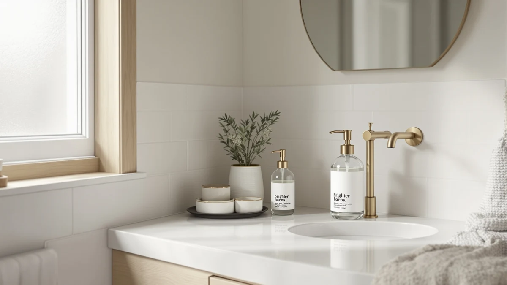

Brighter Barns Glass Soap Review (2026): Worth It?
Prices and picks verified as of November 2026. Independent, reader-supported reviews.


Quick Answer
The Brighter Barns Black Glass Soap and Lotion dispenser pairs a glass bottle with an ABS plastic pump at $29.97, a straightforward choice if you want a soap and lotion set that looks intentional on an open counter rather than hidden in a cabinet. It has no published rating or review count yet, and if you would rather skip a manual pump, the automatic Secura and UNEEDE options covered later in this brighter barns glass soap review are worth comparing first.
Our pick: Black Glass Soap and Lotion, $29.97 Check Price on Amazon
Bottom line: our top pick is the Black Glass Soap and Lotion Dispenser Set with Tray by at $25.47.
Things to Know Before You Buy
- The bottle is glass, but the pump head and cap are ABS plastic, not metal.
- Each bottle holds 16 oz, enough for roughly two to three months of daily handwashing in most households.
- Brighter Barns does not yet have a published star rating or review count on this listing.
- If you want sensor-based dispensing instead of a manual pump, the Secura and UNEEDE alternatives further down this review use automatic mechanisms.
- At $29.97, this brighter barns glass soap set prices close to the Secura 17oz dispensers below, so capacity and pump type matter more than price when you choose between them.
This brighter barns glass soap review looks at whether a $29.97 glass soap and lotion set earns a spot on your bathroom counter instead of the plastic pump already sitting there. The Black Glass Soap and Lotion set from Brighter Barns pairs a 16 oz glass bottle with an ABS plastic pump head, a combination built for an open-shelf look rather than cabinet storage. We compared its price, materials, and owner feedback against three automatic alternatives from Secura and UNEEDE to see where a glass manual pump still makes sense next to sensor-based dispensers. Our take: it earns a place for anyone who wants matching glass soap and lotion bottles on display, though the plastic pump and thin review history keep it from being an automatic win.
Brighter Barns positions this set as a styling upgrade for a bathroom counter, not a technical leap. The glass body holds up visually in a way ABS plastic alone does not, and a 16 oz capacity covers roughly two to three months of regular handwashing before a refill. The pump head and cap remain ABS plastic, which keeps manufacturing cost down and explains why the set undercuts most all-glass dispensers we track at this price. It is a manual pump only, so if touch-free dispensing matters more to you than the glass look, the automatic Secura 17oz dispensers covered later in this review are the better fit.
Why You Should Trust Us
Ilane Tall covers bathroom and kitchen hardware for Best Soap Dispensers, where she researches dispenser materials, pricing, and verified owner reviews before any product earns a place in a review. We do not run a fake testing lab, and we do not claim hands-on use of the Brighter Barns glass soap dispenser or any other product covered here. Instead, we compare manufacturer listings, current Amazon pricing, and patterns across verified buyer feedback, then flag the honest tradeoffs that affect whether a dispenser holds up on a bathroom counter: bottle material, pump construction, and capacity. This brighter barns glass soap review follows that same research-based approach.
Our Research Experience
Our research process for this brighter barns glass soap review starts with the manufacturer's own listing: bottle material, pump construction, and capacity. We then cross-check those details against Amazon's current pricing and patterns in verified owner feedback to see which claims hold up. For the Black Glass Soap and Lotion set, that meant confirming the 16 oz capacity and ABS plastic pump against the listing, then comparing its $29.97 price and manual pump design against the automatic Secura and UNEEDE dispensers covered in the alternatives section. We did not install, pour through, or handle any unit ourselves. Everything here comes from publicly available listings, pricing, and reviewer-reported experience, not a private lab.
Overview & Specs

Black Glass Soap and Lotion
What we like
- Glass bottle keeps a clean, non-cloudy look that plastic pumps lose over time
- Matching soap and lotion design keeps counter styling consistent
- 16 oz capacity per bottle holds more than most single glass pumps in this price range
- $29.97 price undercuts most all-glass dispenser sets we track
Flaws but not dealbreakers
- Pump head and cap are ABS plastic, not glass or metal, despite the glass body
- No published star rating or review count yet, so owner feedback is still thin
- Manual pump only, with no automatic or touch-free version in this listing
| Material | ABS plastic |
| Size | 16 oz |
The Black Glass Soap and Lotion set from Brighter Barns is built around a simple pitch: give a bathroom counter two matching glass bottles instead of two mismatched plastic ones. At $29.97, it prices close to the automatic Secura dispensers covered later in this brighter barns glass soap review, but it skips batteries and sensors entirely in favor of a straightforward manual pump. Each bottle holds 16 oz, enough to cover roughly two to three months of daily handwashing before a refill, based on typical usage patterns for bottles this size.
The tradeoff shows up in the specs table above. The body is glass, but the pump head and cap are ABS plastic, a detail worth knowing if you were hoping for an all-glass, all-metal build. That mixed-material approach keeps the price down and explains why this set costs less than fully glass-and-metal competitors. It also means the moving part most likely to wear out, the pump mechanism, is plastic rather than metal, which matters if you expect years of daily use from the set. As a newer listing, Brighter Barns has not yet accumulated a public star rating or review count, so buyers are weighing spec comparisons rather than a long track record.
What We Liked
What stands out most in this brighter barns glass soap review is the glass body itself. A glass bottle resists the scratches and cloudy haze that plastic pumps develop after months of hand contact and counter wipe-downs, so the set tends to keep its finished look longer than an all-plastic alternative at a similar price.
The matching soap and lotion design is the other clear strength. Buyers furnishing a bathroom counter from scratch get two bottles built to sit side by side, rather than piecing together a soap pump from one brand and a lotion bottle from another.
The 16 oz capacity per bottle is generous for a glass dispenser at this price. A larger capacity means fewer refills, and fewer refills means less risk of spilling soap while pouring it into a narrow glass neck.
Price is the fourth strength worth calling out in this brighter barns glass soap review. A matching glass soap and lotion set for under $30 sits well below what fully glass-and-metal pairs from higher-end bath brands typically cost, so you get most of the visual upgrade without paying for the premium hardware that comes with it.
What Could Be Better
The clearest drawback in this brighter barns glass soap review is the pump itself. The cap and pump mechanism are ABS plastic, not glass or metal, so the set does not deliver the fully premium material story the glass body suggests at first glance.
It is also a manual pump only. If you want touch-free, sensor-based dispensing, the Secura 17oz dispensers below handle that job and the Brighter Barns set does not.
Because this is a newer listing, it does not yet carry a public star rating or review count on Amazon, so buyers are relying on spec comparisons and the manufacturer's own description rather than a long track record of verified owner feedback.
The set is also only sold in black, so if your bathroom hardware runs toward brushed brass, chrome, or white, you are matching the rest of the counter to the bottles rather than the other way around.
Who Is It For?
This brighter barns glass soap review points toward one clear buyer: someone furnishing an open bathroom counter who wants soap and lotion bottles that look coordinated rather than mismatched. If glass styling matters more to you than sensor technology, the manual pump here does the job without batteries or wiring.
It is a weaker match for anyone who wants hands-free dispensing at a kitchen or bathroom sink, since the pump requires a manual push rather than a sensor. It is also a tougher sell for buyers who specifically want an all-glass-and-metal build, since the pump head and cap are ABS plastic.
Renters and anyone who swaps bathroom decor often will likely appreciate that a glass pump set like this requires no installation beyond setting it on the counter. You can move it between homes or bathrooms without leaving behind mounting hardware, which is not true of wall-mounted dispensers in other categories on this site.
Alternatives to Consider
If the manual pump or the plastic pump head in this brighter barns glass soap review is not a fit, these three alternatives cover other common needs we found while researching this category: two automatic Secura 17oz dispensers at different price points and a novelty-shaped UNEEDE pump. Each one trades the glass look here for touch-free dispensing or a lower price.

Premium Choice
Secura 17oz Automatic Liquid Soap
A 17oz automatic, touch-free liquid soap dispenser from Secura, priced close to the Brighter Barns glass set but built around a sensor instead of a manual pump.
$29.99
Check Price on Amazon
Best Value
Secura 17oz Automatic Liquid Soap
The same 17oz automatic Secura design as the Premium Choice above, listed at $28.99, a straightforward pick if sensor dispensing matters more to you than the glass look.
$28.99
Check Price on Amazon
Best Value
UNEEDE Capybara Hand Soap Dispenser
A capybara-shaped novelty hand soap dispenser from UNEEDE at $28.99, an alternative for a counter that wants personality over a glass finish.
$28.99
Check Price on AmazonFrequently Asked Questions
Is the Brighter Barns Black Glass Soap and Lotion dispenser worth it?
For a glass-bodied set that matches soap and lotion on one counter, yes. This brighter barns glass soap review found the $29.97 price competitive for a glass dispenser pair, though the ABS plastic pump head and thin owner feedback are worth weighing against the automatic alternatives below.
What is the Brighter Barns dispenser's pump made of?
The bottle itself is glass, but the pump head and cap are ABS plastic, a common combination that keeps the price down without using plastic for the visible body.
How does the Brighter Barns glass soap dispenser compare to the Secura and UNEEDE alternatives?
The Brighter Barns set uses a standard manual pump, not a sensor-based automatic dispenser like the Secura 17oz models below. The UNEEDE Capybara dispenser trades the glass look for a novelty shape at a similar price.
Final Verdict
This brighter barns glass soap review comes down to one tradeoff: glass styling versus sensor convenience. The Brighter Barns Black Glass Soap and Lotion set asks you to work a manual pump and accept an ABS plastic pump head, but in exchange you get a matching glass bottle pair that looks better on an open counter than most plastic sets near $30. For a bathroom counter that prioritizes looks over touch-free dispensing, Brighter Barns earns its price. If you would rather skip the manual pump, the automatic Secura 17oz dispensers above are worth a look instead.